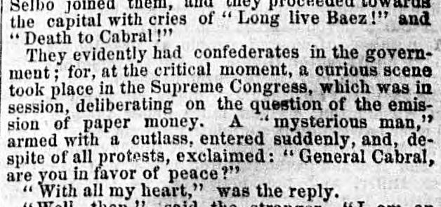
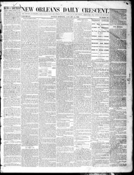

See the full pageVer la página completaA h. ttn mien" armed with a cutlass, entered enly, and de spite of all protestUn hombre armado con un machete entró temprano, y
An armed man carrying a cutlass interrupted a session of the Supreme Congress to announce the arrival of General Baez and demand peace from General Cabral. In the ensuing confusion, ministers sought refuge with foreign consuls, while Cabral stated he would consent to Baez's rule if demanded by the public. Ultimately, General Pedro Guillermo was appointed dictator until an election on December 14 by the Constitutional Assembly unanimously appointed Buenaventura Baez President of the Dominican Republic, with Cabral accepting a military position under Guillermo's government.Un sujeto armado con machete interrumpió una sesión del Congreso Supremo anunciando la llegada del general Báez y exigiendo la sumisión pacífica al general Cabral. En el tumulto consecuente, los ministros buscaron asilo ante los cónsules foráneos, mientras Cabral manifestó que acataría la jefatura de Báez si el pueblo así lo reclamaba. Finalmente, el general Pedro Guillermo asumió el mando dictatorial transitorio hasta que una asamblea constitucional, el 14 de diciembre, eligió por unanimidad a Buenaventura Báez presidente de la República Dominicana, aceptando Cabral un cargo militar subordinado a Guillermo.
FULL TEXT:TRADUCCIÓN:
the capital with cries of "Long live Baez!" and "Death to Cabral!"la capital con gritos de «¡Viva Báez!» y «¡Muera Cabral!»
They evidently had confederates in the government; for, at the critical moment, a curious scene took place in the Supreme Congress, which was in session, deliberating on the question of the emission of paper money. A "mysterious man," armed with a cutlass, entered suddenly, and, despite of all protests, exclaimed: "General Cabral, are you in favor of peace?"Evidentemente tenían confederados en el gobierno; pues, en el momento crítico, tuvo lugar una escena curiosa en el Congreso Supremo, que estaba en sesión, deliberando sobre la cuestión de la emisión de papel moneda. Un «hombre misterioso», armado de un machete, entró de repente, y, a pesar de todas las protestas, exclamó: «General Cabral, ¿está usted a favor de la paz?»
"With all my heart," was the reply.«Con todo mi corazón», fue la respuesta.
New Orleans Daily Crescent. [New Orleans, La.], January 15, 1866. Page 1.